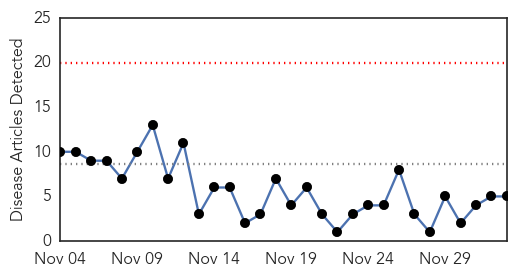
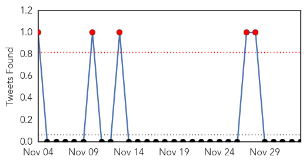
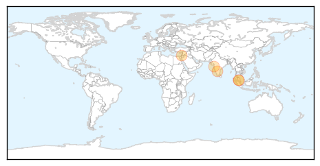
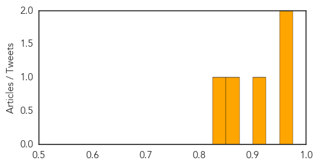
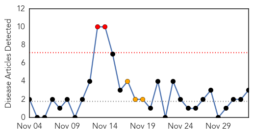
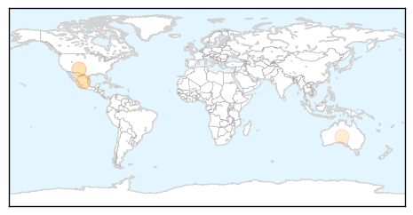

Dengue Fever
30-Day Web Trend
0 alerts, 0 warnings

30-Day Twitter Trend
5 alerts, 0 warnings

Article Locations
Article Confidences
Top Articles:
Top Tweets:
-
No tweets found for Dec 03, 2014
Measles
30-Day Web Trend
2 alerts, 3 warnings

30-Day Twitter Trend
0 alerts, 0 warnings

Article Locations
Article Confidences

Top Articles:
Top Tweets:
-
No tweets found for Dec 03, 2014